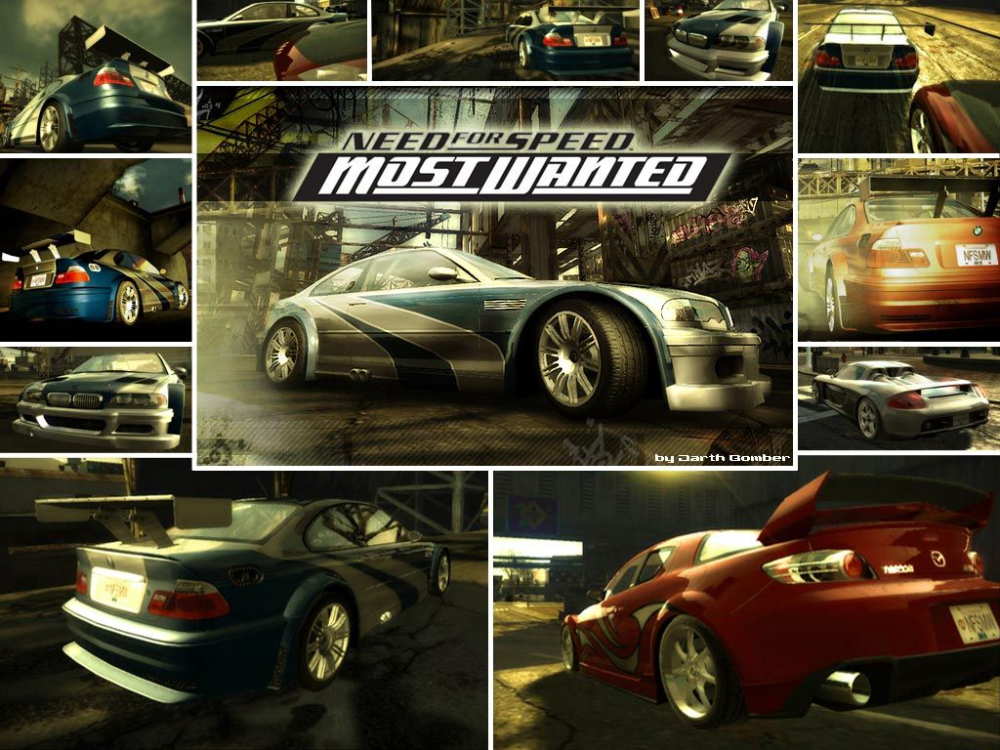
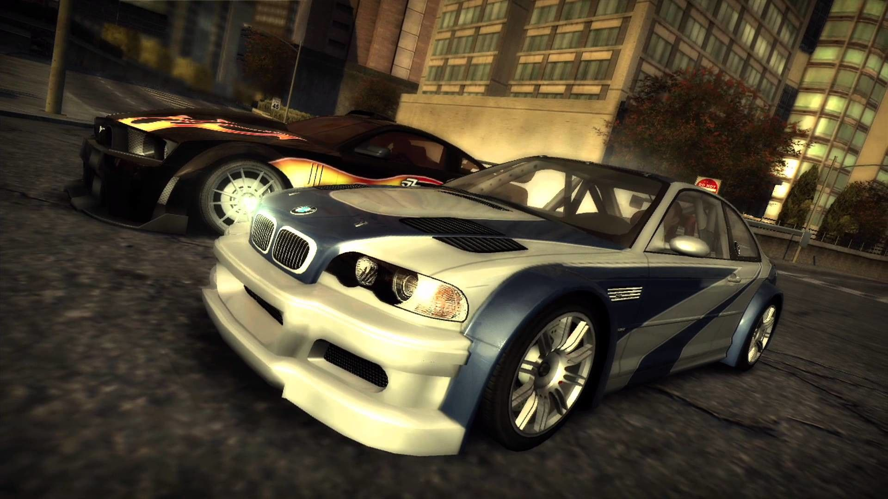

In the city of Rockport, members of the Rockport Police Department (RPD) work to put an end to the city's
illegal street racing scene. A task force of traffic officers led by Sergeant Jonathan Cross works to bring down
the street racers involved, including a group known as the "Blacklist" fifteen street racers who have gained
notoriety for their racing and their evasion of the police. The player, a street racer who arrives at Rockport to
challenge the Blacklist with a custom painted blue and silver BMW M3 GTR, receives help from fellow street racer
Mia Townsend (played by Josie Maran) in setting up a race with Razor, the Blacklist's lowest-ranked driver.
The player attracts the attention of Razor by winning race after race in their M3 GTR, including two races against
Razor's henchmen, Ronald “Ronnie” McCrea and Toru “Bull” Sato. Competing with him in a "pink slip" race a few days later,
Mia discovers the player's BMW has left a huge oil slick at the start line when the race began, and calls the player to
warn them to end the race fast. However, the M3 breaks down due to engine failure and the player loses the race, forcing
them to forfeit their car to Razor. Cross soon arrives with the RPD and arrests the player for street racing after Razor
and the other street racers escape, but is forced to release them due to a lack of evidence as the player no longer
had a car to drive.

Once free, Mia picks up the player from the police station and reveals to the player that Razor had sabotaged their
car in order to seize it and use it to climb up in ranks within the Blacklist, and advises them to do the same in order
to get revenge. Providing them with a safehouse and securing a new car, the player begins working to compete against
the Blacklist in a series of street races and challenges involving police pursuits. In time, the player rises up in the
ranks, gaining enough reputation to soon attract Razor's attention once they become the #2 racer on the Blacklist.
The rivals soon compete again in another pink slip race, with the player eventually defeating Razor and recovering
their prized BMW M3 GTR.
Shortly after their victory, Razor refuses to hand over the keys to the M3, which Mia snatches from him, telling him
“it's over Razor”. Razor retorts by saying “it ain't over until I say it's over” and attempts to assault Mia to retrieve
the keys. Mia subdues him and reveals herself to be an undercover police officer for the RPD, who had been working to
bring down the Blacklist from the inside for Cross. While Razor and the other drivers are all arrested, Mia refuses to
let the player be captured and tosses them the keys, advising them to run. She lies to Cross who questions the player's
whereabouts, saying that he got away. This infuriates Cross, who demands the entire RPD go after the player, who is now
the most wanted street racer in the nation.
As the RPD begins a citywide manhunt for the player, Mia contacts them and informs them with an escape route out of the
city by jumping a derelict bridge on the city limits. She tells him that they can no longer go back to any of the safe
houses as Cross knows about them, and that their car is fast enough to make the jump. The player successfully evades the
cops by jumping the bridge and escaping Rockport. In a post-credits scene, Cross creates a national-level warrant for the
player and his BMW M3 GTR, adding him to the National Most Wanted List. This event leads to the sequel, Need For Speed:
Carbon.